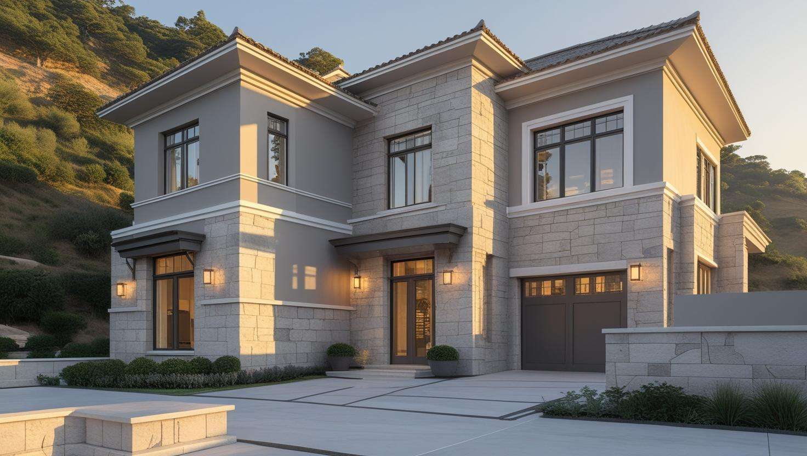
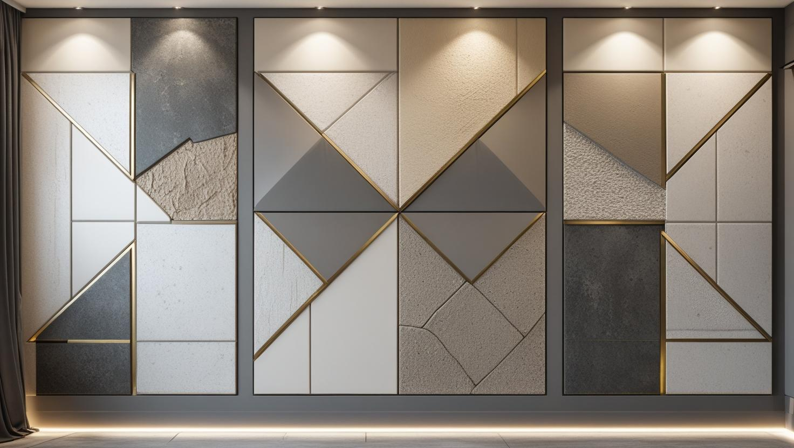

İstanbul Zeytinburnu Profesyonel Boya Ustası
Konutun, dükkânın ve atölyenin iç içe olduğu Zeytinburnu'nda boya işini binanın kullanımına göre planlıyoruz. 20 yıllık tecrübemizle nem, tamirat ve çalışma saatini keşifte birlikte değerlendiriyoruz.
Zeytinburnu'nda Boya Badana: Konut, Dükkân ve Sahil Nemi
Zeytinburnu boyacı talebi konut ve ticari alan arasında bölünüyor. İlçede yoğun apartman stoğunun yanında imalathane, depo ve cadde üzeri dükkân yoğunluğu da bulunuyor.
Marmara kıyısına yakın konumdaki binalarda, özellikle alt katlarda ve dış duvara sırtını veren odalarda nem kaynaklı leke ve kabarma görülebiliyor. Bu yüzeylerde astar seçimi boyanın ömrünü belirleyen ana etken; lekenin üstünü boyamak kalıcı sonuç vermiyor.
Zeytinburnu boya ustası talebinin ticari tarafında öncelik işletmenin kapalı kalmaması oluyor; çalışmayı mesai dışına ve hafta sonuna alabiliyoruz.
Hizmetlerimiz

İç Mekan Boyama
Yeni yapılmış bir dairede taze sıva ve ince çatlaklar, eski bir apartmanda ise nem izi ve üst üste binmiş katmanlar hazırlığın ana konusudur. Zeytinburnu'nda atölye ya da depo olarak kullanılan katlarda silinebilir, açık renkli yüzeyler öneriyoruz.
- Yeni sıvada astar ve çatlak dolgusu
- Nem izli duvarda leke tutucu astar
- Atölye ve depoda silinebilir boya
- Eşyalı evde mobilya ve zemin koruması

Dış Cephe Boyama
Bitişik binaların sık olduğu sokaklarda komşu yapı yenilendiğinde açıkta kalan yan duvar yağış almaya başlar ve dış cephe gibi boyanmalıdır. Uygulamadan önce kat maliklerinin kararı ve iskelenin kurulacağı alan netleştirilir.
- Açıkta kalan yan duvar boyası
- Gevşek sıva temizliği ve onarım
- Yağışa uygun dış cephe sistemi
- Dükkân cephesi ve tabela çevresi

Dekoratif Boyama
Dekoratif boya yalnız salonda değil, dükkân içinde vitrin arkası ya da kasa çevresi gibi müşterinin ilk gördüğü yüzeylerde de kullanılabilir. Doku ve renk, mekânın ışığına ve ne sıklıkla temizleneceğine göre seçilir.
- Dükkân içinde konsept duvar
- Vitrin ve kasa arkası yüzeyler
- Kolay temizlenen efekt boyalar
- Konutta doku boya seçenekleri
Fiyat Tablosu
| Hizmet Türü | Metrekare Fiyatı | Ortalama Süre (100m²) | Garanti |
|---|---|---|---|
| İç Cephe Boyama | 100-200 TL | 2-3 Gün | Uygulama kapsamına göre |
| Dış Cephe Boyama | 150-280 TL | 3-5 Gün | Uygulama kapsamına göre |
| Dekoratif Boyama | 250-500 TL | 4-7 Gün | Uygulama kapsamına göre |
| Ofis Boyama | 120-220 TL | 2-4 Gün | Uygulama kapsamına göre |
Metrekare fiyatları yaklaşık ön değerlendirme aralığıdır. Uygulanacak ölçüm yöntemi, boyanacak alanın kapsamı, yüzey durumu, tamirat ihtiyacı, kat sayısı ve malzeme seçimi keşif sırasında netleştirilir.
Dış cephe boya fiyatları uygulama alanı için yaklaşık 150–280 TL/m² aralığındadır. Kesin hesaplama yöntemi ve teklif; yüzey durumu, bina yüksekliği, erişim veya iskele ihtiyacı, tamirat kapsamı, boya sistemi ve uygulanacak kat sayısına göre keşif sırasında netleştirilir.
Uygulama kapsamına göre işçilik garantisi sağlanır. Garanti kapsamı ve istisnaları teklif veya iş sözleşmesinde belirtilir.
Bu rakamlar İstanbul Boyacılık'ın 2026 gösterge fiyat aralığıdır. Bir piyasa ortalaması değildir. Kesin fiyat; yüzey durumu, hazırlık ve tamirat miktarı, uygulanacak kat sayısı, seçilen malzeme sınıfı, ulaşım ve kat koşulları ile evin eşyalı mı boş mu olduğu keşifte görüldükten sonra belirlenir.
Zeytinburnu'nda aralığı yukarı taşıyan ana kalem nem gören yüzeylerde çıkan onarım ve ek astar ihtiyacı. Ticari mekânlarda ise mesai dışı çalışma ve yüksek tavanlı hacimlerde erişim ihtiyacı belirleyici oluyor.
Zeytinburnu'nda Yeni Yapılmış ve Eski Dairelerde Boya Badana Hazırlığı
Zeytinburnu'nda yeniden yapılmış binalarla uzun süredir kullanılan apartmanlar aynı sokakta yan yana bulunabilir ve ikisi farklı hazırlık ister. Yeni dairede konu çoğunlukla taze sıva ve kılcal çatlaklardır; eski dairede ise nem izi ve biriken boya katmanları öne çıkar.
Yeni teslim alınan dairede duvarlar kimi zaman yalnız astarlı ya da tek kat boyalı bırakılır. Sıva ve alçı tam kurumadan kapatıcı bir boya sürmek, içerideki nemin çıkmasını zorlaştırıp lekeye yol açabilir. Bina oturdukça köşe ve tavan birleşimlerinde görülen kılcal çatlaklar da boyadan önce esnek bir dolguyla kapatılmalıdır.
Eski apartmanda iş, mevcut boyanın sağlam olup olmadığını kontrol etmekle başlar. Kazındığında kalkan katman temizlenir, derin çatlaklar onarılır ve emiciliği farklı yamalar astarla eşitlenir. Hangi dolgu malzemesinin nerede kullanılacağını merak ediyorsanız alçı ile macun farkını anlatan yazımızı okuyabilirsiniz.
Bitişik Binalarda Açıkta Kalan Yan Duvar ve Dış Cephe Kararı
Yan parseldeki bina yıkılıp yeniden yapıldığında, önceden komşu binaya dayalı olan duvar birden yağışa ve rüzgâra açık kalabilir. Bu yüzey bir iç duvar gibi değil, dış cephe gibi ele alınmalıdır.
Böyle bir duvarda önceki binadan kalma harç ve sıva izleri, boşluklar ve pürüzler bulunabilir. Önce gevşek parçalar temizlenir ve duvarın su alıp almadığına bakılır; ardından yüzey onarımı, dış cepheye uygun astar ve yağışa dayanıklı bir son kat uygulanır. Duvar içeriye nem geçiriyorsa bu sorunun nedeni boyadan önce çözülmelidir.
Yan duvar da ön cephe gibi binanın ortak alanı sayıldığından uygulama kararı genellikle kat malikleri tarafından, yönetim planına uygun biçimde alınır. İskele kaldırıma ya da komşu parsele taşacaksa belediyeyle ve komşu mülk sahibiyle önceden görüşmek gerekebilir. Duvarın yüksekliği ve erişim yolu keşifte belirlenip teklifte ayrı bir kalem olarak gösterilir; genel maliyet kalemleri için dış cephe boyama fiyatları rehberimize göz atabilirsiniz.
Atölye, Depo ve Zemin Kat Dükkânlarında Hangi Boya Seçilmeli?
İmalathane, depo ve dükkân gibi ticari alanlarda boya seçimi görünüşten çok temizlik, ışık ve kullanım yoğunluğuna göre yapılır. Doğru ürün, duvarın tozlanan ve sürtünen bölgelerinde bakımı kolaylaştırır.
- Silinebilir duvar boyası: Kumaş tozu, hav ya da el izi tutan duvarlar nemli bezle temizlenebilir kalır.
- Açık renkli tavan: Işığı yansıtarak tezgâh ve raf aralarının daha aydınlık görünmesine yardım eder.
- Bodrum ve zemin katta nem kontrolü: Havalandırması zayıf katlarda nem kaynağı çözülmeden yapılan boya kısa sürede lekelenebilir.
- Darbe alan yüzeyler: Koridor, yükleme kapısı ve merdiven kenarı için daha dayanıklı bir son kat düşünülebilir.
Makine, top kumaş ya da ürün rafı bulunan alanlarda koruma planı işin önemli bir parçasıdır; hangi bölümün hangi gün boşaltılabileceğini keşifte birlikte konuşuyoruz. Üst katlarda oturanlar varsa çalışma saatleri onların düzeni de gözetilerek belirlenir.
Zeytinburnu’nda Hizmet Verdiğimiz Mahalleler
Zeytinburnu boyacı ustası olarak konut, dükkân, atölye ve depo boyaması için yerinde keşif yaptığımız mahalleler:
Zeytinburnu Mahalleleri
- Zeytinburnu Beştelsiz Mahallesi
- Zeytinburnu Çırpıcı Mahallesi
- Zeytinburnu Gökalp Mahallesi
- Zeytinburnu Kazlıçeşme Mahallesi
- Zeytinburnu Maltepe Mahallesi
- Zeytinburnu Merkezefendi Mahallesi
- Zeytinburnu Nuripaşa Mahallesi
- Zeytinburnu Seyitnizam Mahallesi
- Zeytinburnu Sümer Mahallesi
- Zeytinburnu Telsiz Mahallesi
- Zeytinburnu Veliefendi Mahallesi
- Zeytinburnu Yeşiltepe Mahallesi
- Zeytinburnu Yenidoğan Mahallesi
Zeytinburnu Boyacılık Müşteri Yorumları
"Zeytinburnu'nda ev boyama hizmeti aldık. İstanbul Boyacılık son derece temiz ve titiz çalıştı. Hizmet kalitesi mükemmeldi."
Burak Aksoy
Zeytinburnu / İstanbul
"Ofis boyama işi için iletişime geçtik. Disiplinli ekip ve kaliteli boya malzemeleri ile işimizi eksiksiz tamamladılar."
Sevgi Koca
Zeytinburnu / İstanbul
"Dış cephe boyama hizmetinden çok memnun kaldık. Randevuya sadık kaldılar ve işlerini hızlı bitirdiler."
Nurdan Yılmaz
Zeytinburnu / İstanbul
Faydalı Bağlantılar
Zeytinburnu boya badana planında fiyat hesabı, boya markası ve yakın ilçe seçeneklerini birlikte değerlendirmek için aşağıdaki rehberler kullanılabilir.
Zeytinburnu Boyacı Ustası — Sık Sorulan Sorular
Yeni yapılmış binadaki daireyi hemen boyatabilir miyim?
Duvarlar kuru görünse bile sıva ve alçının içindeki nemin çıkması zaman alabilir; erken sürülen kapatıcı boya bu nemi hapsedip leke ya da kabarma yapabilir. Keşifte yüzeyin kuruma durumuna ve köşelerdeki ince çatlaklara bakarak başlama zamanını ve astarı birlikte belirliyoruz.
Deniz tarafındaki dairemde duvar nem yapıyor, ne yapmalıyım?
Önce nemin kaynağını ayırt etmek gerekiyor: yoğuşma mı, dışarıdan su alma mı, tesisat kaçağı mı. Kaynak dururken uygulanan boya kısa sürede kabarıyor. Keşifte bunu değerlendirip önce çözülmesi gerekeni söylüyoruz.
Yan binanın yıkılmasıyla açıkta kalan duvarımızı boyatabilir miyiz?
Evet, ancak bu duvar dış cephe gibi ele alınmalıdır: gevşek parçalar temizlenir, boşluklar onarılır ve yağışa uygun bir dış cephe sistemi uygulanır. Bu iş tek bir dairenin değil bütün binanın konusu olduğundan onay genellikle kat malikleri toplantısında alınır; iskele gerekip gerekmediği ise keşifte belirlenir.
İmalathane veya depo boyuyor musunuz?
Evet. Bu hacimlerde yüksek tavan nedeniyle erişim yöntemi ve makine/raf koruma planı işin ayrı bir kalemi oluyor. Çalışmayı üretim dışı saatlere alarak faaliyeti durdurmadan ilerleyebiliyoruz.
Dükkânımın tabela arkası ve cephesi de boyanıyor mu?
Cephe ve tabela çevresi ayrı bir kalem olarak değerlendiriliyor; dış yüzeyde kullanılacak boya sistemi iç cepheden farklı. Yükseklik ve erişim ihtiyacı varsa bunu keşifte ölçüp teklife ayrı yazıyoruz.
Binamız kentsel dönüşüm sürecindeyse daireyi boyatmak mantıklı mı?
Bu, dairede daha ne kadar oturulacağına bağlıdır. Yıkım takvimi belirsizse ve evde yaşamaya devam edecekseniz, yalnız gerekli odaları temel tamiratla ve standart bir boya sınıfıyla yenilemek düşünülebilir. Takvim yakınsa hangi yüzeylerin gerçekten boyanması gerektiğine keşifte birlikte karar verebiliriz.
İletişim
İletişim Bilgileri
Telefon: 0507 832 29 12
E-posta: boyaustamistanbul@gmail.com
10+ Uzman Ustamızla Zeytinburnu ve çevresine hizmet veriyoruz.
Çalışma Saatleri: Pzt-Cmt 00:00-23:59